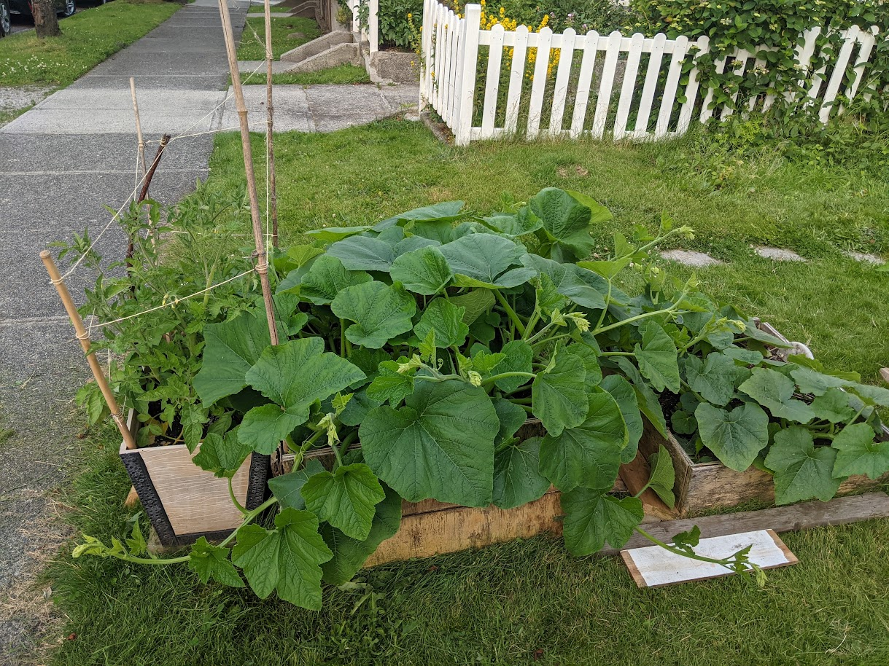

Transmission of solar radiation in a foggy West Coast Forest
Learning Objectives
Describe how is short-wave radiation is distributed within a plant canopy.
Explain how different wavelengths behave differently within the canopy.
Understand how radiation distribution affect photosynthesis in a plant canopy.
Beer’s Law
Beer’s Law describes the attenuation (reduction in flux density) of a beam of radiation through a homogeneous medium.
\[
R_x = R_0 e^{-kx}
\qquad(1)\]
\(\mu\) is the attenuation coefficient
Combination of absorptance and reflectance
Will vary with \(\lambda\)
Figure 1: Beam attenuation as a function of distance
Beer’s Law
Strictly speaking - the law only applies to homogenous media.
Attenuation will vary with because composition & density vary
Plant canopies are not homogenous
Beer’s Law
Strictly speaking - the law only applies to homogenous media.
However, it measurements show it roughly applies in uniform canopies
e.g., grass
We can develop empirical (observation based) relationships for different plant canopies
Vertical distribution of folliage
Modifying Beer’s Law to apply to
The main modification to overcome the non-uniformity of leaves is to replace distance (x) with the cumulative leaf area index (LAI).
What is LAI?
The leaf area index is the one-sided leaf (and stem) area per unit ground area.
Leaf Area Index
Leaf Area Index
A single spruce branch
The same branch broken into its respective components
Modifying Beer’s Law
Cumulative LAI (L) = sum of LAI
Integration of LAI through canopy starting at top of canopy
Orientation of canopy leaf area
Pickleweed evolved to minimize LAI to help survive hostile conditions on exposed rocky coasts

Squash evolved to maximize LAI to help maximize energy capture and produce large fruits with many seeds
Leaf orientation
The canopy extinction coefficient is often called the projection coefficient because it’s related to the orientation of the leaves: erectophile or planophile in relation to the sun angle.
Example of extreme clumping
Clumping of vegetation in Burns Bog
Modifying Beer’s Law
We rewrite Beer’s Law for solar radiation under a canopy as:
Radiative transfer through plant canopies can be approximated using Beer’s Law using the cumulative Leaf Area Index (L) instead of the distance, plus path length and a clumping factor.
Radiation within plant canopies is not uniformly distributed in space, time (‘sunflecks’) and with regard to spectral characteristics.
We can use radiative transfer theory to infer the LAI of a stand if we measure short-wave radiation transmission.